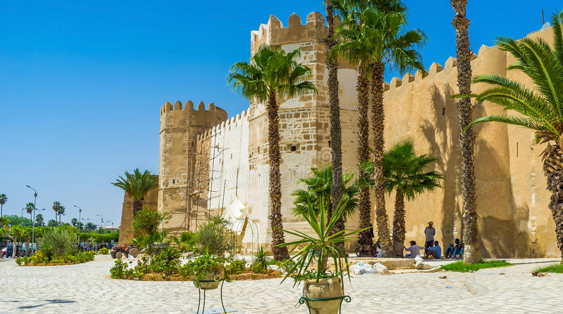

Sfax

Informations
Sfax is a city in Tunisia, located 270 km (170 mi) southeast of Tunis. The city, founded in AD 849 on the ruins of Roman Taparura, is the capital of the Sfax Governorate (about 955,421 inhabitants in 2014),and a Mediterranean port. Sfax has a population of 330,440 (census 2014).The main industries are phosphate, olive and nut processing, fishing (largest fishing port in Tunisia) and international trade. The city is the second-most populous after the capital, Tunis..